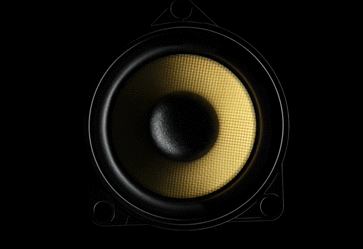

<ion-header class="play_header no-background">
  <ion-toolbar>
      <ion-buttons slot="start">
        <ion-back-button></ion-back-button>
      </ion-buttons>
  </ion-toolbar>
</ion-header>
<ion-content fullscreen="true" class="play_modal">
    <h3 text-center>{{ show_event }}</h3>
    <p text-center>{{ description }}</p>
    <div class="img_container">
      
    </div>

    <div class="play_actions">
      <ion-range min="0" max="{{duration}}" [(ngModel)]="position">
        <!--  [disabled]="is_in_play && is_playing"  -->
        <ion-label slot="start">{{ position | groupby }}</ion-label>
        <ion-label slot="end" *ngIf="duration == -1">--:--</ion-label>
        <ion-label slot="end" *ngIf="duration != -1">{{ duration | groupby }}</ion-label>
      </ion-range>

      <ion-grid>
        <ion-row class="ion-align-items-center ion-justify-content-center" style="height: 100%">
          <ion-col>
            <!-- Backwards -->
            <ion-fab-button class="skip-btn trans_btn" [disabled]="!is_ready || !is_in_play"
              (click)="controlSeconds('back')">
              <svg xmlns="http://www.w3.org/2000/svg" width="45.257" height="39.987" viewBox="0 0 45.257 39.987"><g transform="translate(0 39.987) rotate(-90)"><g transform="translate(0 0)"><path d="M39.987,25.263A19.994,19.994,0,1,1,0,25.263a1.186,1.186,0,1,1,2.372,0A17.622,17.622,0,1,0,19.994,7.641H17.936l2.942,3.293a1.186,1.186,0,1,1-1.769,1.58L14.9,7.807a2.028,2.028,0,0,1,0-2.7L19.109.4a1.186,1.186,0,1,1,1.769,1.58L17.936,5.269h2.057A20.016,20.016,0,0,1,39.987,25.263Z" fill="#fff"/></g></g></svg>
            </ion-fab-button>
          </ion-col>
          <ion-col>
            <!-- Play/Pause -->
            <ion-fab-button class="play-pause-btn trans_btn" (click)="playRecording()" *ngIf="!is_playing"
              [disabled]="!is_ready">
              <ion-icon name="play"></ion-icon>
            </ion-fab-button>

            <ion-fab-button class="play-pause-btn trans_btn" (click)="pausePlayRecording()" *ngIf="is_playing"
              [disabled]="!is_ready">
              <ion-icon name="pause"></ion-icon>
            </ion-fab-button>
          </ion-col>
          <ion-col>
            <!-- Forwards -->
            <ion-fab-button class="skip-btn trans_btn" [disabled]="!is_ready || !is_in_play"
              (click)="controlSeconds('forward')">
              <svg xmlns="http://www.w3.org/2000/svg" width="45.257" height="39.987" viewBox="0 0 45.257 39.987"><g transform="translate(0 69.792) rotate(-90)"><g transform="translate(29.805)"><path d="M69.793,19.994a19.994,19.994,0,1,0-39.988,0,1.186,1.186,0,0,0,2.372,0A17.622,17.622,0,1,1,49.8,37.616H47.741l2.942-3.293a1.186,1.186,0,1,0-1.769-1.58L44.709,37.45a2.028,2.028,0,0,0,0,2.7l4.205,4.707a1.186,1.186,0,1,0,1.769-1.58l-2.942-3.293H49.8A20.016,20.016,0,0,0,69.793,19.994Z" transform="translate(-29.805)" fill="#fff"/></g></g></svg>
            </ion-fab-button>
          </ion-col>
        </ion-row>
      </ion-grid>
    </div>
</ion-content>